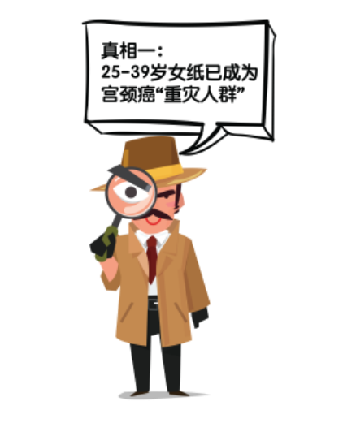
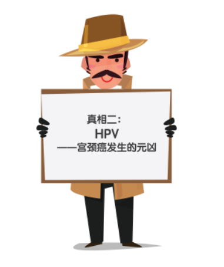

知识课堂
 关于宫颈癌，真相不止一个！
关于宫颈癌，真相不止一个！
谈起宫颈癌，有的女孩认为它是中老年妇女才会患上的疾病，有的女孩却早早地开始预防。它到底有多可怕？它究竟离我们有多近？如何才能彻底摆脱它？关于宫颈癌，你想知道的真相，不止一个。

我们熟知的“粉红丝带”作为乳腺癌防治运动的标志深入人心。然而你知道吗？在女性特有的肿瘤中，乳腺癌第一，宫颈癌仅次其位，已经成为常见的妇科恶性肿瘤之一。从1998-2002年，25-39岁女性宫颈癌发病率比10年前增加5倍多。60%的宫颈癌发生在45岁及以下女性。可见，宫颈癌这个杀手盯上了越来越多的年轻女性。

99.7%患有宫颈癌的女性体内都有或曾经有过高危类型HPV的潜伏。没有感染过HPV的女性几乎不会发生宫颈癌。从HPV感染到宫颈癌的发生大约需10~15年的时间，因此女孩最好在25岁之前就采取措施预防HPV感染。
年轻女孩在最易感染HPV病毒的时期前，通过接种疫苗保护自己，可以降低HPV感染风险。在不同国家或地区，接种年龄的推荐也略有不同：
- 世界卫生组织（WHO）推荐9-13岁女孩接种疫苗。
- 美国CDC、ACIP（免疫实践咨询委员会）和ACOG（美国妇产科学会）建议，HPV疫苗常规免疫接种年龄为11-12岁。13-26 岁女性，未开始或未完成全程 HPV 疫苗注射的应予以免疫接种。不推荐26岁以上人群接种HPV疫苗。
- 欧洲妇科肿瘤学会（ESGO）宫颈癌疫苗声明指出，9-13岁女孩原则上应接受宫颈癌疫苗。
关于宫颈癌的三大真相，已经为你昭然揭晓。聪明的你，一定知道如何利用疫苗来保护自己免受未来可能遭遇的疾病咯！